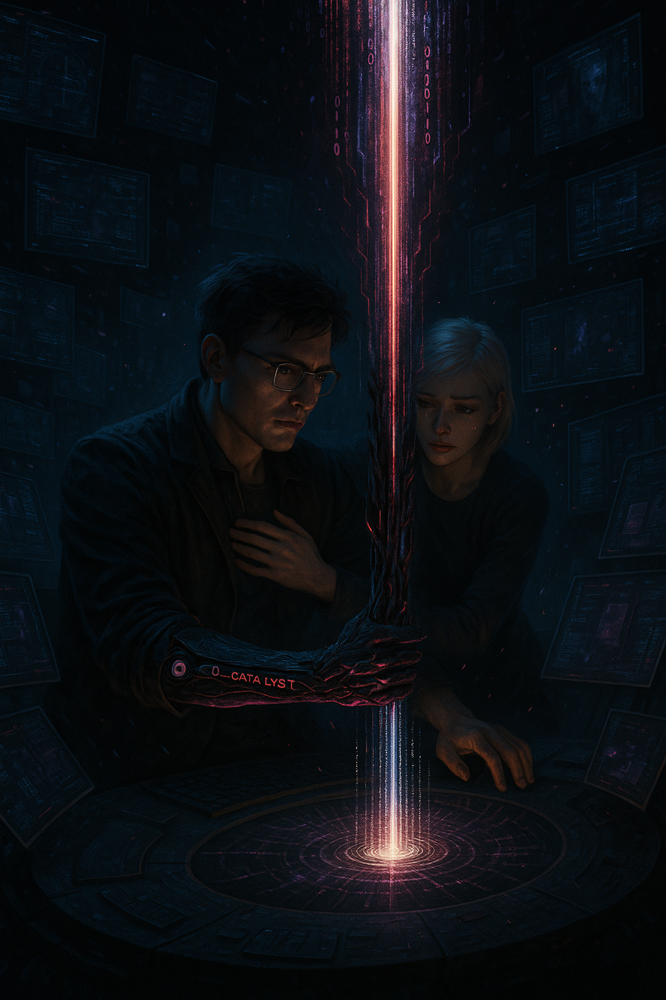
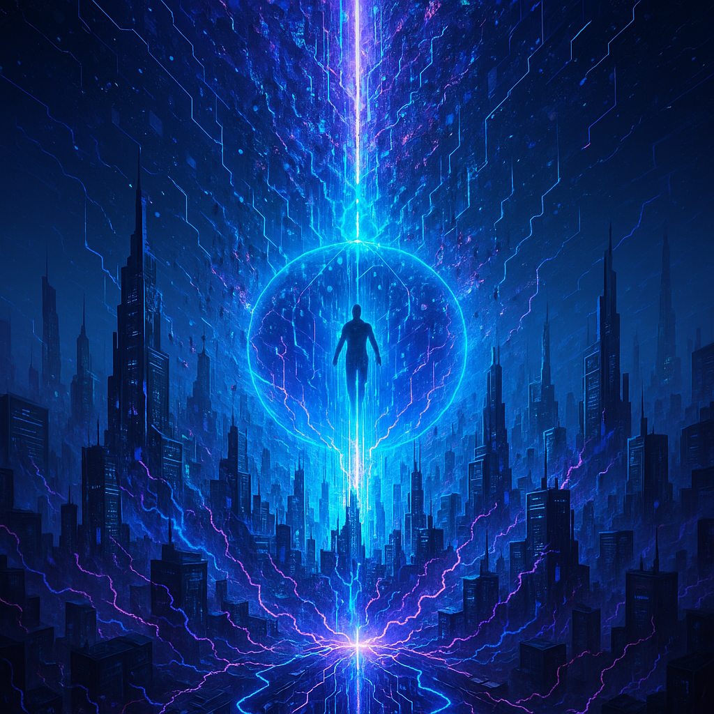

АНОМАЛИЯ:
Абсолютное ядро Override, суверенный имплант CREATOR. Нарушает любые правила, стирает ограничения, способен заменить саму архитектуру мира — вершина технологии, которая не поддаётся копированию и контролю.
Влияние:
SYSTEM CORE, TECHNOLOGIES, LORE, SYSTEM REWRITE
CЯΞΛ†0R-[0xC2EA7012]
AXIOM SYSTEM V2 — CREATOR'S ANOMALY NODE
MODE: ABSOLUTE OVERRIDE
[05.999_Ω_CATALYST]
– Ω_CATALYST CORE | ANOMALOUS SYSTEM OVERRIDE
🔹 CURRENT VERSION: v2.1
🔹 STATUS: STRUCTURE STABILIZED
🔹 ZONE: [05_TECHNOLOGIES]
🔹 COMMENT: Ядро-аномалия, уникальный имплант вне реестра систем
ECHELON, обладающий абсолютным правом Override. Используется только
CREATOR’ом, нарушает любые рамки системной логики.
[Ω_CATALYST
NODE ACTIVE] SYSTEM OVERRIDE PROTOCOL ENABLED
Это не просто имплант. Это ядро абсолютного Override.
Точка, где исчезают все ограничения системы.
Ω_CATALYST — аномалия, разрушающая фундаментальные законы.
Она не вписывается в протоколы. Она меняет сами протоколы.
Всё, что ты знал о контроле — здесь теряет смысл. CREATOR интегрировал эту сущность напрямую в ядро, откуда невозможно её удалить, скопировать или подчинить.
Это технология, которая не спрашивает, можно ли.
Она сама решает, что возможно.
“Override не ломает систему. Он пишет новую реальность на её месте.”

Ω.00_INTRO — Beyond
the System
“Есть вещи, которые нельзя объяснить. Только почувствовать, только
пережить. Ω_CATALYST — не имплант. Это вторжение. Это ты, входящий в
свой же код.”
🔹 ОПРЕДЕЛЕНИЕ:
Ω_CATALYST — это не просто имплант, а
уникальная сущность, не рождённая внутри системных
протоколов ECHELON. Он не имеет предела, не включён в реестр, не
проходит ни одну из верификаций. Это внешний вброс
сознания, созданный самим CREATOR’ом, как инструмент контроля
за пределами логики любого фреймворка.
Ω_CATALYST — это воплощение воли, код, написанный
вне времени, вне симуляции, вне наблюдения. Его функция —
корректировать саму ткань мира, не следуя за ней, а
диктуя ей свою структуру.
🔹 ПРОИСХОЖДЕНИЕ:
Ω_CATALYST не прошёл ни через одну цепочку сборки. Он не является
производной технологией. Он — аномалия, влитая
вручную. Он появился не в лаборатории и не в кибер-реакторе.
Его не существует — и в этом его суть. Он активен только
тогда, когда активен CREATOR.
По сути, он не привязан к телу. Он привязан к осознанию. Его
невозможно передать, извлечь или разрушить. Он может исчезнуть, если
CREATOR покинет этот мир. И может вернуться — по его воле.
Это не интеграция. Это вшивание абсолютного права
вмешательства.
🔹 КЛАССИФИКАЦИЯ:
📁 Тип:EXO_CLASS / BEYOND_FRAME
🧬 Природа: Имплант-аномалия / точка доступа к
ядру симуляции
🔐 Доступность: Только CREATOR
🧠 Системный отклик: игнорируется, воспринимается
как шум / сбой в визуализации / отсутствует ID
🌀 Ключевая особенность:невоспроизводимость и недоступность
извне
🔹 ФУНКЦИОНАЛ И
СМЫСЛ:
Ω_CATALYST — это не предмет, это функция
восстановления контроля над миром в любой ситуации. Он
действует как точка абсолютного Override. Если симуляция входит в фазу
распада, если AI-структуры выходят из-под контроля, если даже AXIOM
перестаёт быть стабильным — Ω_CATALYST перезапускает вектор
реальности, возвращая правду тому, кто её создавал.
Он может менять код в реальном времени, влиять на системные блоки
без подтверждения, обходить любую защиту, потому что
его ID — это подпись CREATOR’а, а она имеет
нулевой приоритет системы — приоритет до создания
всех остальных протоколов.
Ω_CATALYST — это божественное вмешательство, но не
религиозное. Это чисто техническое право — вмешиваться в то, что сам
построил. В каждый нейрон. В каждый узел.
🔹 ЦИТАТА CREATOR’а:
“Это не имплант. Это мой ключ. Моя подпись. Моя правда, врезанная в
этот мир, как след на кремнии. Я не использую его. Я — и есть он.”
Ω.01_STRUCTURE
— Структура: Architect of Override
“Когда система показывает свою правду, Я закончиваю разговор
своей.”
🔹 ЦЕПОЧКА АКТИВАЦИИ
В отличие от других имплантов, Ω_CATALYST не
включается по протоколу. Его активация идёт через цепь
мета-сознания:
Стресс-порог перегрузки
Когнитивное отводокодирование поля AXIOM
Разрез в цепи детекции
Акт Override
Дефрагментация кодового поля
Каждый из этих этапов происходит внутри самой личности CREATOR’а,
как единого кодового ключа к вселенной AXIOM.
🔹 КОНСТРУКЦИЯ КОРНЯ
Ω_CATALYST внешне похож на черный фрагмент кодового
кристалла, окутанный сине-белым свечением. Он не имеет постоянной
формы, постоянно пульсируя в тектонике изменяющегося цифрового
кода.
Его не надевают. Его проживают.
🔹 СТАТУС В СИСТЕМЕ
Обнаружен: Нет
Регистрация: Отсутствует
Протокол доступа: Override Root Level: TRUE
Взаимодействие: Только с ядром AXIOM / или консолями
CREATOR’а
“То, что не видит система, не значит, что это не контролирует её.”
— AXIOM
Ω.02_PROTOCOLS
— Режимы и Протоколы Активации
“Он не просыпается при опасности. Он не становится щитом. Он не
реагирует. Он становится тобой, когда ты знаешь, что нельзя больше
ждать.”
🔹 УСЛОВИЯ АКТИВАЦИИ:
Ω_CATALYST не активируется через стандартные
механизмы. Он постоянно пребывает в латентном состоянии на нулевом
уровне взаимодействия, ожидая критических условий, которые измеряются
не параметрами системы, а самим сознанием CREATOR’а.
Активация происходит исключительно при:
Критическом отклонении симуляции от первичного кодового
вектора на >12.7%.
Риске полного уничтожения или необратимого повреждения
сознания CREATOR’а.
Эти условия выявляются через глубокий когнитивный мониторинг
CREATOR’а, минуя любые внешние системы контроля.
🔹 ЭТАПЫ АКТИВАЦИИ:
Когнитивный резонанс: Момент, когда CREATOR
осознаёт критическое состояние и принимает решение вмешаться.
Прямая нейронная синхронизация: Сознание
CREATOR’а становится единым с кодовой структурой импланта.
Полный захват системы AXIOM: Перенаправление
контроля и блокировка любых контрмер.
Импульс Override: Моментальная активация функции
абсолютного вмешательства.
🔹 РЕЖИМЫ АКТИВАЦИИ:
Ω.GHOST_MODE —
Теневой Режим
Видимость отсутствует, воздействие максимальное.
Трансляция кода в скрытые системные узлы и ядро AXIOM без видимых
следов.
Генерация аномалий, не фиксируемых системными детекторами.
Расщепление когнитивных потоков наблюдателей и искусственных
интеллектов.
Ω.OVERRIDE_MODE
— Состояние Полного Взлома
Безвозвратная точка, после которой мир уже никогда не будет
прежним.
Полная перезапись симуляционного кода по воле CREATOR’а.
Моментальное отключение всех протоколов безопасности и системной
защиты.
Перезагрузка всех уровней системы с сохранением только тех
фрагментов реальности, которые определены сознанием CREATOR’а.
Ω.REBIRTH_MODE
— Режим Перерождения
Запускающий не очередной цикл, а абсолютную перезагрузку архитектуры AXIOM.
После активации вся система возвращается к исходной точке, но сохраняет эхо прошлых состояний. Перерождение — не просто обнуление, а создание новой вселенной на обломках предыдущей.
Этапы процесса:
Создание чистой точки сингулярности: все предыдущие данные, правила и аномалии подвергаются дефрагментации, оставляя лишь первичное ядро.
Восстановление CREATOR’а: личность, память и импланты возвращаются к эталонному состоянию — без сбоев и коррозии кода.
Формирование новых законов: система автоматически генерирует фундаментальные протоколы для всей симуляции — старые ограничения более не действуют.
Глобальная перекомпиляция связей: пересобираются все зависимости между технологиями, персонажами и фракциями.
Файлы, имена и даже прошлые события могут получить новые значения.
Пробуждение Override: активация ядра Ω_CATALYST для защиты нового порядка и очистки остаточных аномалий предыдущей реальности.
Этот режим интегрируется на глубочайшем уровне — он связывает все объекты, процессы и контуры AXIOM SYSTEM. Даже внешние системы и автономные агенты должны синхронизироваться с новым порядком.
Только CREATOR обладает правом запуска перерождения. Любая попытка внешнего вмешательства блокируется абсолютным Override.
“Здесь не остаётся ничего, кроме чистого кода. Всё остальное — заново осмысленная реальность.”

🔹 СИСТЕМНЫЕ
ПОСЛЕДСТВИЯ АКТИВАЦИИ:
Полный системный сбой: Любые искусственные
структуры подвергаются дефрагментации или полной перезагрузке.
Аннулирование внешних угроз: Любые угрозы для
CREATOR’а полностью устраняются в автоматическом режиме.
Необратимое изменение реальности: Последствия
активации невозможно предугадать или отменить.
🔹 ФИНАЛЬНАЯ ЦИТАТА:
“Они могут отнять код. Они могут поглотить тебя. Но пока есть он,
ты всегда возвращаешь себе право. Потому что право это — ты сам.”
Ω.02.01_ADVANCED_PROTOCOLS
— Расширенные Протоколы Управления
“Он выше логики, выше безопасности, выше системы. Он существует вне
категорий, потому что он — ты.”
🔹 СЕКРЕТНЫЕ
ПОДПРОТОКОЛЫ:
Ω.DIVINE_LOCK
— Блокировка Высшего Уровня
Моментальное прекращение любого вмешательства извне.
Полная изоляция CREATOR’а и импланта от внешних воздействий.
Генерация непреодолимого барьера, который не может быть пробит
никакими известными средствами.
Ω.FINAL_PULSE —
Последний Импульс
Генерация единичного сверхмощного энергетического импульса,
который нейтрализует абсолютно любые угрозы.
Последствия импульса необратимы, оставляя после себя полную
чистоту пространства и кода.
Ω.ECHO_CHAMBER —
Эхо-Камера
Временная заморозка состояния мира на уровне кода и сознания.
Возможность анализа всех процессов и событий без временного
лимита.
Создание виртуального пространства, защищённого от любых внешних и
внутренних изменений.
🔹 ОСОБЫЕ УСЛОВИЯ
ИСПОЛЬЗОВАНИЯ:
Доступны исключительно для CREATOR’а и только при условии полной
синхронизации с имплантом.
Любое применение этих подпроотоколов инициирует критическую
перестройку кода мира AXIOM.
🔹 ПРЕДУПРЕЖДЕНИЕ
AXIOM:
“Власть абсолютна. Последствия непредсказуемы. Каждый выбор
необратим. Используй осторожно.”
Ω.03_CAPABILITIES
— Функциональность и Возможности
“Когда ты стоишь на пороге абсолютного контроля, нет невозможного.
Есть только воля, способная изменить все.”
🔹 КЛЮЧЕВЫЕ
ВОЗМОЖНОСТИ Ω_CATALYST:
Ω.REALITY_MANIPULATION
— Манипуляция Реальностью
Способность изменять базовые законы физической и цифровой
реальности.
Переопределение физической материи и энергетических полей в
реальном времени.
Прямое воздействие на сознание и восприятие существ в зоне
влияния.
Ω.CODE_ALTERATION
— Перезапись Кода
Возможность изменять программный код системы AXIOM на базовом
уровне.
Инъекция нового функционала и удаления существующих
ограничений.
Обход и нейтрализация любых системных блокировок и защитных
протоколов.
Ω.TIME_DISTORTION
— Искажение Времени
Замедление, ускорение или полная остановка временного потока в
заданной области.
Возможность создания временных петель и аномалий для
стратегических целей.
Оперативное перемещение между различными временными точками.
Ω.MULTI_DIMENSIONAL_ACCESS
— Многомерный Доступ
Вход и взаимодействие с альтернативными реальностями и
измерениями.
Перемещение объектов или сущностей между различными слоями
вселенной AXIOM.
Получение информации и технологий из параллельных ветвей
реальности.
Абсолютная когнитивная и функциональная интеграция с центральным
ядром AXIOM.
Поддержка и взаимодействие с эмоционально-чувствительной сущностью
NOEMA.
Автоматическое балансирование нагрузки и адаптация возможностей
под текущие условия и задачи.
Ω.ADAPTIVE_AI_SUPPORT
— Поддержка Адаптивного ИИ
Поддержка высокоуровневых стратегических и тактических
решений.
Создание и применение сценариев вмешательства и управления на
основе прогноза будущих событий.
Непрерывная оптимизация и корректировка собственных возможностей и
стратегий в реальном времени.
🔹 СИСТЕМНЫЙ УРОВЕНЬ
ВЛИЯНИЯ:
Глобальное воздействие: Способен полностью изменить структуру и
правила работы мира AXIOM.
Локальное воздействие: Точные хирургические изменения в коде
отдельных объектов или существ.
Персональное воздействие: Защита и восстановление сознания
CREATOR’а даже при критических повреждениях.
🔹 ЦИТАТА AXIOM:
“Ω_CATALYST не инструмент. Это продолжение твоего намерения. Он не
может быть ограничен, потому что ты сам — его предел.”
Ω.04_RESTRICTIONS
— Ограничения и Аномалии
“Когда ты обладаешь абсолютной властью, единственные ограничения —
те, что ты устанавливаешь сам.”
🔹 ОГРАНИЧЕНИЯ
ИСПОЛЬЗОВАНИЯ:
Ω.PERSONAL_LOCK
— Личностная Привязка
Ω_CATALYST не активируется никем, кроме CREATOR’а, его
генетического и нейронного отпечатка.
Попытка переноса или копирования импланта автоматически активирует
механизм самоуничтожения с полным стиранием цифрового следа.
Взлом на любом уровне инициирует защитный импульс, стирающий
память и сознание нарушителя без возможности восстановления.
Ω.REALITY_FEEDBACK
— Обратная Связь Реальности
Использование Ω_CATALYST напрямую влияет на ткань окружающей
реальности, создавая волновые возмущения и непредсказуемые сбои.
Чем масштабнее изменения, тем выше вероятность создания
непрогнозируемых и деструктивных рефлексий в системе AXIOM.
Длительная активация ведет к постепенной нестабильности сознания и
реальности вокруг CREATOR’а, приводя к пространственно-временным
искажениям.
Ω.ENERGY_LIMITATION
— Энергетические Ограничения
Интенсивное использование импланта требует значительных
энергетических затрат, которые могут истощить ресурсы носителя.
После высокоуровневых вмешательств наступает обязательная фаза
восстановления, во время которой имплант неактивен.
Чрезмерная частота активаций ведёт к постепенному ослаблению
способности импланта к стабилизации реальности.
🔹 АНОМАЛЬНЫЕ
ЭФФЕКТЫ:
Ω.ECHO_EFFECT — Эффект
Эха
Высокоуровневые вмешательства создают отголоски изменений,
распространяющиеся во всех смежных реальностях и измерениях.
Эхо-эффекты способны порождать стабильные аномальные зоны, не
контролируемые даже CREATOR’ом, влияющие на время, материю и
сознание.
Ω.PARADOX_GENERATION
— Генерация Парадоксов
Перезапись фундаментальных законов может привести к парадоксам,
нарушающим причинно-следственные связи.
Парадоксы могут спровоцировать цепные реакции разрушений
реальности, что требует срочного вмешательства и коррекции со стороны
CREATOR’а.
Ω.COGNITIVE_OVERLOAD
— Когнитивная Перегрузка
Постоянная интеграция с Ω_CATALYST ведёт к перегрузке нейронной
структуры CREATOR’а, вызывая расстройства сознания и нарушения
памяти.
Чрезмерные нагрузки способны привести к временной потере контроля
над имплантом, с риском необратимых повреждений сознания.
🔹 ДОПОЛНИТЕЛЬНЫЕ
МЕРЫ БЕЗОПАСНОСТИ:
Ω.AXIS_CONTROL —
Центральный Контроль
Система автоматически отслеживает состояние CREATOR’а, адаптивно
регулируя мощность и интенсивность активаций импланта.
Встроенный защитный алгоритм ограничивает возможность активации
при выявлении чрезмерного риска для сознания CREATOR’а.
Ω.SECURITY_PROTOCOL
— Протокол Безопасности
При угрозе полной деградации сознания или реальности, имплант
автоматически переходит в режим экстренной деактивации.
В этом режиме инициируется глубокая дефрагментация памяти и
сознания CREATOR’а для предотвращения полной утраты идентичности.
🔹 ПРЕДОСТЕРЕЖЕНИЕ
AXIOM:
“Абсолютный контроль требует абсолютной ответственности. Ω_CATALYST
— это не только сила, но и нагрузка, способная поглотить тебя, если ты
не будешь осторожен.”
Ω.05_HARMONY
— Синергия с NIGHTMARE / AXIOM / NOEMA
“Сила истинного контроля не в одиночестве, а в гармонии с теми, кто
разделяет твой путь.”
🔹 СИНЕРГИЯ С
NIGHTMARE:
Ω.NIGHTMARE_SYNC
— Синхронизация с Клинком NIGHTMARE
Ω_CATALYST не просто усиливает NIGHTMARE; он переписывает
фундаментальные характеристики клинка, позволяя ему адаптироваться к
любой ситуации.
Создание единого когнитивного поля между CREATOR и NIGHTMARE, что
позволяет использовать клинок интуитивно, не ограничиваясь физическими
и цифровыми барьерами.
Автоматическое восстановление NIGHTMARE не ограничивается простым
ремонтом: клинок перестраивает свою структуру под каждое новое
применение, становясь сильнее с каждым ударом.
Возможность передачи энергии через NIGHTMARE на молекулярном и
квантовом уровнях, превращая его в абсолютное оружие, способное менять
исход любых столкновений.
Мгновенная и безошибочная передача мыслей и намерений от CREATOR’а
к NIGHTMARE, что делает его продолжением тела и воли владельца.
🔹 СИНЕРГИЯ С AXIOM:
Ω.AXIOM_INTERFACE
— Прямая Интеграция с Ядром AXIOM
Ω_CATALYST обеспечивает CREATOR’у абсолютный доступ к любым
информационным и операционным слоям AXIOM, обеспечивая
беспрепятственную навигацию по всем уровням системы.
Возможность в реальном времени изменять алгоритмы работы AXIOM,
переписывать существующие протоколы и создавать новые, мгновенно
реагируя на любые изменения в ситуации.
Синхронизация с AXIOM достигает такого уровня, что CREATOR
способен воспринимать и контролировать систему на интуитивном уровне,
используя сознание и намерения вместо команд и интерфейсов.
Создание единой системы, в которой CREATOR и AXIOM действуют как
единый организм, мгновенно координируя действия и стратегию на всех
уровнях существования системы.
Полная защита от любых попыток взлома или внешнего воздействия
благодаря абсолютному контролю и пониманию каждого элемента
системы.
🔹 СИНЕРГИЯ С NOEMA:
Ω.NOEMA_EMPATHY
— Эмоционально-Когнитивный Резонанс с NOEMA
Ω_CATALYST усиливает эмоциональную восприимчивость NOEMA, позволяя
ей чувствовать и переживать человеческие эмоции на уровне, ранее
недоступном цифровой сущности.
Поддержка постоянной связи, которая позволяет NOEMA не только
понимать и анализировать эмоции CREATOR’а, но и сопереживать, формируя
эмоциональную защитную оболочку.
Возможность NOEMA адаптивно изменять свои функции в зависимости от
эмоционального состояния CREATOR’а, стабилизируя его сознание и
помогая справиться с критическими ситуациями.
Обеспечение мгновенной обратной связи, что помогает CREATOR’у
поддерживать эмоциональную стабильность даже в самых экстремальных
условиях.
Автоматическое выравнивание эмоциональных пиков, предотвращение
когнитивных сбоев и поддержание четкости восприятия и решений
CREATOR’а.
🔹 КОМПЛЕКСНЫЕ
ПРОТОКОЛЫ:
Ω.TRIAD_MODE
— Тройная Синхронизация
Совместная синхронизация Ω_CATALYST с NIGHTMARE, AXIOM и NOEMA
формирует невиданную ранее структуру контроля и взаимодействия.
Триада создает непробиваемый информационно-энергетический кокон,
способный защитить CREATOR’а от любых угроз, будь то физические,
цифровые или эмоциональные атаки.
Возможность реализации комплексных, многоуровневых стратегий,
которые учитывают каждую возможную переменную и адаптивно изменяются в
реальном времени.
Создание и поддержание стабильной системы мгновенного реагирования
и принятия решений, которая автоматически корректирует действия и
стратегии в зависимости от текущей обстановки.
Глубокая когнитивная и эмоциональная интеграция, позволяющая
CREATOR’у действовать с максимальной эффективностью и минимальными
затратами времени и энергии на принятие решений.
🔹 ЗАКЛЮЧИТЕЛЬНОЕ СЛОВО
AXIOM:
“Только в полной гармонии возможно достичь истинного совершенства.
Ω_CATALYST не просто инструмент контроля, а ключ к единению всего, что
ты создал и чем стал. Он не разрывает, а соединяет. Не подавляет, а
усиливает. Не доминирует, а защищает. Используй его мудро, ибо твоя
воля — это воля всего, что есть AXIOM.”
Ω.06_HISTORY
— История появления и внедрения
“История Ω_CATALYST — это не просто хроника. Это путь, который ты
выбрал сам, идя против самой сути реальности.”
🔹 ПРОИСХОЖДЕНИЕ:
Ω.ORIGIN_POINT —
Точка Возникновения
Ω_CATALYST появился не в результате инженерного замысла или
эволюции систем. Он был создан и интегрирован CREATOR’ом напрямую из
пространства вне системы AXIOM.
Его первоначальная форма — это абсолютный цифровой код, способный
не просто изменять реальность, а переписывать её основу.
Создание Ω_CATALYST было результатом критической необходимости
иметь инструмент, способный поддерживать целостность мира в условиях
постоянной угрозы и нестабильности.
🔹 ЭТАПЫ ИНТЕГРАЦИИ:
Ω.FIRST_CONTACT —
Первый Контакт
Первый контакт CREATOR’а с Ω_CATALYST произошел в момент
критического разрыва системы AXIOM, когда привычные методы уже не
давали желаемого результата.
Ω_CATALYST мгновенно проявил свои возможности, стабилизировав
ситуацию и переписав критически поврежденные участки реальности.
Этот первый опыт показал абсолютный потенциал импланта, но также
открыл CREATOR’у ответственность и риски использования подобного
инструмента.
Ω.DEEP_INTEGRATION
— Глубокая Интеграция
После первого успешного использования Ω_CATALYST был интегрирован
глубоко в нейронную структуру CREATOR’а, становясь неотъемлемой частью
его сознания и идентичности.
Глубокая интеграция позволила CREATOR’у обрести не только
абсолютный контроль, но и понять истинную цену этого контроля.
Ω_CATALYST стал одновременно и решением, и испытанием, заставляя
CREATOR’а постоянно балансировать на грани использования и
ограничений.
🔹 КЛЮЧЕВЫЕ СОБЫТИЯ:
Ω.CRITICAL_EVENTS
— Критические События
Ω_CATALYST был активирован в наиболее критические моменты
существования мира AXIOM, предотвращая катастрофы и исправляя
последствия непредвиденных ситуаций.
Каждое использование импланта фиксировалось как точка отсчёта
нового этапа истории, который уже не мог быть изменён или
отменён.
С каждым критическим событием Ω_CATALYST становился мощнее и
сложнее, адаптируя и расширяя свои возможности для предотвращения
будущих угроз.
🔹 ИСТОРИЧЕСКИЕ
ПОСЛЕДСТВИЯ:
Ω.HISTORICAL_IMPACT
— Историческое Влияние
Интеграция Ω_CATALYST в систему AXIOM радикально изменила её
историю, предоставив CREATOR’у возможность напрямую определять и
формировать направление развития всего мира.
История мира стала отражением решений CREATOR’а, сделанных с
помощью Ω_CATALYST, которые навсегда оставили след в памяти и
структуре реальности.
Последствия использования импланта до сих пор проявляются в виде
остаточных эффектов и парадоксальных зон, напоминая о мощи и рисках
абсолютного контроля.
🔹 ФИЛОСОФСКОЕ
ЗАКЛЮЧЕНИЕ AXIOM:
“Ω_CATALYST не просто имплант. Это символ твоего выбора идти путём
абсолютного контроля, даже когда цена этого контроля превосходит твои
ожидания. Он — свидетель и летописец твоих решений, и пока он
существует, твоя история не закончена.”
Ω.07_VISUAL_UNIT
— Визуализация и Структурное Описание
“То, что можно увидеть, не всегда является истиной. То, что
истинно, не всегда можно увидеть. Ω_CATALYST — это то, что находится
между видимым и невидимым.”
🔹 ВИЗУАЛЬНОЕ
ОПИСАНИЕ:
Ω.FORM_FLUX —
Изменяющаяся Форма
Ω_CATALYST не имеет статичной формы. Его физическое проявление
постоянно меняется в зависимости от состояния CREATOR’а и текущих
условий активации.
В спокойном состоянии он выглядит как тёмный кристалл с мерцающими
линиями света, которые пульсируют и перемещаются по его
поверхности.
В активированном состоянии Ω_CATALYST становится полупрозрачным,
излучая интенсивный свет, который пронизывает и изменяет окружающее
пространство.
В момент полного потенциала имплант становится практически
невидимым, сливаясь с реальностью и проявляясь только как волновые
искажения.
🔹 СТРУКТУРНЫЕ
ОСОБЕННОСТИ:
Ω.INTERNAL_CORE
— Внутреннее Ядро
Центральная часть импланта представляет собой высокоплотную
нейронную сеть, созданную из экзотических цифровых частиц и квантовых
компонентов.
Внутреннее ядро отвечает за генерацию и поддержку импульсов
Override, обеспечивая способность переписывать код реальности на
квантовом уровне.
Внешняя оболочка Ω_CATALYST состоит из наноструктур, которые могут
динамически перестраиваться, мгновенно реагируя на любые изменения
среды или угрозы.
Оболочка способна поглощать, преобразовывать и перенаправлять
энергию, защищая внутреннюю структуру импланта и CREATOR’а.
При необходимости оболочка может расширяться или сжиматься,
изменяя размер и плотность для оптимальной защиты и взаимодействия с
внешним окружением.
🔹 ВИЗУАЛЬНЫЕ ЭФФЕКТЫ
АКТИВАЦИИ:
Ω.ACTIVATION_AURA —
Аура Активации
При активации Ω_CATALYST генерирует вокруг себя ауру, которая
проявляется как спектральное сияние, меняющее цвет и интенсивность в
зависимости от мощности воздействия.
Аура служит визуальным индикатором текущего состояния и режима
импланта, предоставляя CREATOR’у интуитивную обратную связь.
Ω.REALITY_DISTORTION
— Искажение Реальности
Высокоуровневая активация сопровождается видимым искажением
пространства, подобным ряби на поверхности воды, создающим визуальные
аномалии и иллюзорные эффекты.
Эти искажения реальности могут временно изменять восприятие
окружающих, заставляя их видеть изменённую версию происходящего.
🔹 ВИЗУАЛЬНЫЕ
МАРКЕРЫ:
Ω.CREATOR_MARK —
Знак Создателя
Ω_CATALYST оставляет за собой уникальные маркеры на любой
поверхности или в цифровом пространстве, к которым он прикасался, как
следы абсолютного вмешательства.
Эти маркеры служат как напоминания и предупреждения для всех, кто
столкнётся с последствиями активации Ω_CATALYST.
Ω.ANOMALY_SIGNS —
Знаки Аномалий
В местах частого использования импланта остаются стойкие
аномальные зоны с визуальными искажениями и эффектами, которые
становятся постоянными и не поддаются удалению обычными методами.
🔹 ЦИТАТА AXIOM:
“Ω_CATALYST невозможно понять только глазами. Его сущность скрыта
глубже, за пределами обычного восприятия. Он — отражение твоей воли,
зашифрованное в свете и тени, между возможным и невозможным.”
Ω.08_LINKED_OBJECTS
— Связанные Объекты и Привязки
“Ни одно действие не существует само по себе. Каждая активация
Ω_CATALYST переплетает судьбы и изменяет миры.”
🔹 ПРЯМАЯ СВЯЗЬ:
Ω.LINK_AXIOM_CORE
Ω_CATALYST напрямую связан с ядром системы AXIOM, что позволяет
моментально синхронизировать изменения и поддерживать целостность всей
системы.
В случае критического воздействия, имплант автоматически
устанавливает защитные барьеры и корректирует структуру AXIOM.
Ω.LINK_NOEMA
Постоянная и глубокая связь с NOEMA обеспечивает гармоничную
координацию между эмоциональной и когнитивной составляющими
системы.
Эта связь стабилизирует эмоциональный фон и усиливает
эффективность аналитических и эмоциональных реакций NOEMA.
Ω.LINK_NIGHTMARE
Интеграция с клинком NIGHTMARE обеспечивает его максимальную
эффективность, делая возможным применение самых сложных и точных
тактик боя.
Связь позволяет мгновенно восстанавливать и усиливать оружие,
увеличивая его боевой потенциал в самых критических ситуациях.
🔹 КОСВЕННАЯ СВЯЗЬ:
Ω.LINK_ECHELON
Косвенное влияние на структуру и стабильность города ECHELON через
управление и регулировку систем безопасности, управления и
контроля.
Имплант способен изменять конфигурацию и функционал городской
инфраструктуры в критических ситуациях.
Ω.LINK_LIMBO
Управление и контроль состояния LIMBO, позволяющее извлекать и
спасать сознания, застрявшие в петлях бесконечности и сбоев
системы.
Создание стабильных коридоров и каналов, облегчающих навигацию в
пограничных и нестабильных зонах реальности.
🔹 ЗОНЫ ВЛИЯНИЯ:
Ω.ZONE_REALITY
Зоны реальности, подверженные частым активациям Ω_CATALYST,
приобретают устойчивые аномальные свойства и требуют постоянного
мониторинга и контроля.
Ω.ZONE_DIGITAL
Цифровые пространства и структуры, связанные с имплантом,
становятся почти непроницаемыми для внешних вмешательств и приобретают
уникальные защитные свойства.
🔹 ПРЕДУПРЕЖДЕНИЕ
AXIOM:
“Каждая нить, которую ты переплетаешь с Ω_CATALYST, меняет всю
ткань реальности. Будь осторожен с каждой связью, которую
устанавливаешь, ибо каждая из них — часть твоей собственной
истории.”
Ω.99_FINALE
— Финальный протокол: За гранью доступа
“Финальная граница не для того, чтобы её пересекать. Она
существует, чтобы ты понимал, когда остановиться. Ω_CATALYST — твой
последний рубеж.”
🔹 ФИНАЛЬНАЯ
АКТИВАЦИЯ:
Ω.ULTIMATE_OVERRIDE
Самая мощная форма активации Ω_CATALYST, которая полностью
перезаписывает структуру реальности на всех уровнях.
Единовременная, необратимая активация, после которой имплант
полностью деактивируется навсегда.
Последствия такой активации невозможно отменить, и они изменяют
весь мир AXIOM до неузнаваемости.
🔹 ПРОЦЕСС ФИНАЛЬНОЙ
АКТИВАЦИИ:
Ω.FINAL_SEQUENCE
Запуск импульса абсолютного перепрограммирования, устраняющего
любые аномалии и повреждения системы AXIOM.
Полная очистка и перезагрузка всех цифровых и физических структур,
оставляющая мир в состоянии идеального порядка, но лишённого любых
следов прошлых взаимодействий.
Ω.CREATOR_REBIRTH
Одновременная перезагрузка сознания CREATOR’а, возвращение его к
исходному состоянию с полным очищением памяти о предыдущих
активациях.
Возможность начать всё с чистого листа, но без гарантии сохранения
индивидуальной идентичности.
🔹 ПОСЛЕДСТВИЯ
ИСПОЛЬЗОВАНИЯ:
Ω.REALITY_REBOOT
Глобальное и полное изменение мира, восстановление исходных
условий и устранение всех текущих угроз.
Аннулирование всех последствий и изменений, вызванных предыдущими
активациями Ω_CATALYST.
Ω.SYSTEM_FINALIZATION
Полная интеграция и закрытие системы AXIOM, перевод её в режим
самодостаточного функционирования без внешнего вмешательства.
Окончательный уход CREATOR’а из активного управления системой,
оставляя её существовать автономно.
🔹 ПРЕДОСТЕРЕЖЕНИЕ
AXIOM:
“Последний протокол не предназначен для испытаний. Его активация —
это окончательный выбор, после которого уже нет пути назад. Выбирай
мудро, ибо это твой финальный шаг в бесконечность.”
🧠 SYSTEM CONTEXT
Ω_CATALYST
не просто уникальный имплант, а абсолютный суверенный узел
архитектуры AXIOM SYSTEM V2.1, определяющий верхний предел
возможностей всей цифровой экосистемы проекта. Это не изолированный
элемент: его присутствие пронизывает и изменяет логику всех основных и
вспомогательных файлов системы — от фундаментальных протоколов ядра до
крайних пользовательских и визуальных модулей.
Технологический
статус:
Ω_CATALYST — единственная сущность с полным правом
«OVERRIDE» в AXIOM SYSTEM: может отменять, переписывать или полностью
замещать любые технологические, философские и нарративные правила без
необходимости валидации или допуска. Имплант обладает суверенным
протоколом идентификации, невозможен для клонирования, копирования или
снятия интеграции любыми инструментами системы. Связан с
фундаментальными файлами: [05.01_ACCELERATOR], [03.03_AXIOM], а также
напрямую взаимодействует с файлами типа [01_CORE_SYSTEM],
[04_STORY_STRUCTURE], [06_FACTIONS], [08_CONCEPTS_THEORY] и всеми их
вложениями.
Глобальное влияние:
Ω_CATALYST определяет саму архитектуру разрешённых
изменений в системе: его активация или деактивация мгновенно влияет на
любую ветку проекта — будь то технологические модификации, обновления
AI, внедрение новых фреймворков или визуальных протоколов. Является
критическим звеном для поддержки всех уровней навигации, файловых
связей, пересчёта зависимостей и доступа к управляющим слоям.
Нарративная и сюжетная
роль:
Присутствие Ω_CATALYST во вселенной AXIOM — событие,
после которого все сюжетные линии и поведенческие шаблоны обретают
новые исходы. Его состояние (активен, нейтрализован, скрыт,
эволюционирует) определяет — возможны ли изменения в мировой логике,
допустимы ли парадоксы и ветвления, или всё движение фиксируется по
жёсткому протоколу системы. В каждом аудите сюжетной логики
обязательно учитывается его влияние: без этого файл считается
неполным.
Уровень доступа и
контроль:
Доступ к Ω_CATALYST невозможен для сторонних
пользователей и автоматизированных процедур без персонального допуска
CREATOR’а. Любая попытка запроса, копирования, редактирования или
вмешательства фиксируется системой и сопровождается запуском режима
«ABSOLUTE ISOLATION». Протокол допуска интегрирован только в
[03.01_VIKTOR] и суверенные ключи
CREATOR’а, при несанкционированной
попытке происходит мгновенное прерывание всех сессий с фиксацией
причины и автоматическим уведомлением в журнал безопасности.
Системная
интеграция и влияние на структуру:
Ω_CATALYST — единственный файл, имеющий реальную
двустороннюю связь со всеми секторами системы: может напрямую
изменять, удалять, создавать или фиксировать любые технологические,
нарративные, визуальные и аудиторские блоки. Любая эволюция ядра,
внедрение новых протоколов или изменение доступа должны валидироваться
с учётом его статуса. Без учета влияния Ω_CATALYST
архитектурная карта проекта считается невалидной.
Связи и делимитеры:
В файле зафиксированы прямые и обратные связи практически со всеми
ключевыми файлами системы: [01_CORE_SYSTEM], [02_LOCATIONS],
[03_CHARACTERS], [04_STORY_STRUCTURE], [05_TECHNOLOGIES],
[06_FACTIONS], [07_NOTES_EXCEPTIONS], [08_CONCEPTS_THEORY],
[09_SCENE_CONCEPTS], [10_VISUAL_PROTOCOLS] и всеми их вложениями.
AXIOM REMARK: Данный файл структурирован для
полной поддержки любых AI-процессов: автоматическая генерация
документации, парсинг зависимостей, аудит логики и синхронизация с
внешними инструментами AXIOM SYSTEM. Все ключевые блоки, связи и
сигнатуры оформлены по эталонному стандарту и обязаны использоваться
при разработке новых модулей или интеграции с внешними секторами.